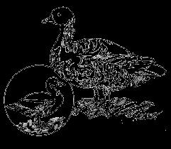
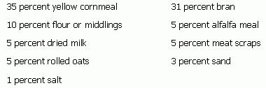
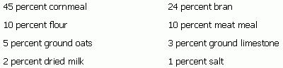
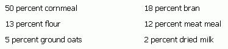

Back in 1949 - before factory farming and the "pump 'em full of chemicals" school of agriculture blitzed the country - a fellow named Jack Widmer wrote a little book called PRACTICAL ANIMAL HUSBANDRY. Now that manual wasn't what you'd call completely exhaustive, the writing style wasn't the best and a few of the ideas it advanced - such as confining laying hens in cages - were later refined into the kind of automated farming that so many of us are fighting against these days.
Still, PRACTICAL ANIMAL HUSBANDRY contained a good deal of basic information that today's "homesteaders" all too often need and don't know where to find. I'm pleased, then, that the publisher of the book, Charles Scribner's Sons, has granted me permission to reprint excerpts from this out-of-print manual. I think that many of my readers will find the following information both interesting and informative. - MOTHER.
Excerpts from PRACTICAL ANIMAL HUSBANDRY by Jack Widmer are reprinted by permission of Charles Scribner's Sons. Copyright 1949 by Charles Scribner's Sons.
Ducks are much easier to raise than chickens or turkeys. They are subject to few diseases, are sturdy enough to live through a more variable brooding temperature than other fowl, and if given half a chance will weigh from five to six pounds at eleven weeks, an ideal butchering age for that delicacy of delicacies, Roast Long Island Duckling. Their feeding is a simple matter, their feeds easily mixed, and the amateur agriculturist will have more encouraging results from ducks than he will from most members of the home barnyard.
True, it is almost essential for breeding ducks to have access to some sort of water in which they may swim during the breeding season for egg fertility is tremendously increased if they have a good swimming hole; but this can be supplied by either streams, lakes, or man-made pools that need not be very large to accommodate all the ducks that the average family will require for home consumption. In the event that a swimming hole is not practical, then the country dweller may purchase day-old ducklings and fatten them without swimming facilities.
Ducks do not require elaborate housing arrangements (four square feet per breeding duck is sufficient . . . three square feet for fattening birds) and barrels, packing crates or other waste material make excellent nesting boxes. In moderate climates ducks will not require any but natural shelter and the ducks themselves, beyond being a bit on the noisy side, are interesting and intelligent birds and give little worry in relation to their many advantages.
Ducks are divided into three major categories: [1] meat ducks, [2] egg producers and [3] ornamental ducks. In this work we will not be concerned with the third class for they are used primarily in zoos, parks and country estates that are interested in their ornamental attributes. However class 1 and class 2 are of importance to those living in the country.
The meat ducks are made up of the following breeds: Pekin, Alesbury, Muscovy, Roen, Cayuga, Buff and Swedish. Of these breeds the Pekin and Muscovy are considered the most popular in the United States . . . the Pekin being the mainstay in the duckling, industry of Long Island and other Eastern States. The Muscovy is very popular in California, Oregon and Washington (as well as in the Eastern States) although many Pekins are also found on the Pacific Coast. Both breeds are very satisfactory for the average American locality and both produce excellent carcasses.
Breeds most suitable for egg production are the Runner (White, Buff and Penciled), Buff and Khaki-Campbell. Of these the Runner is by far the most popular and many duck fanciers who are fond of duck eggs maintain a few of this breed for the Runner is to the duck world what the White Leghorn is to the chicken world.
Choice of breed will therefore depend on whether the prospective duck raiser is interested in meat or eggs. Here on Toowoomba, where we usually maintain upwards from twenty ducks, we keep the Pekin and are supplied with all the ducks that we require for the table as well as having a number of surplus eggs that are consumed by the family.
The Muscovy is most popular in the Eastern States. This breed comes in two varieties . . . the White and dark. They are excellent fliers and require little care as they will forage wide. They are quite good egg producers and in contrast to the Pekin are good setters and will rear their young with little attention. They have proven very useful for the general farm and do not require swimming water for egg fertility.
We have two general methods of getting started with ducks: [1] We may purchase day-old ducklings from a hatchery or [2] we may purchase breeding stock, mate our ducks, incubate and brood our own ducklings.
When we, started with our Pekins we purchased our original stock as day-old ducklings, raised them to maturity and saved the better females. We then traded some of our males for drakes belonging to our neighbors (who had also purchased Pekin ducklings, but from a different hatchery) and we continued from there. However, some breeders prefer to purchase mature ducks of breeding age and thus produce their own eggs. This may be practical if water is available for as has already been mentioned it is difficult to produce fertile eggs without sufficient water for the swimming of the breeding flock. If water is not available, then day-old ducklings is the only answer.
Once the question of desired breed has been settled, and contact has been made with a reputable hatchery for the purchase of the ducklings, we are ready to undertake the raising of our ducks. Numbers ordered will depend on space available, how much time we wish to devote to our birds and the number of ducks, eggs, or both that we are interested in producing. We started with 25 ducklings (ordered from a Wisconsin hatchery and flown air express) and we raised every one of the 24 that were alive upon arrival.
Ducklings may be successfully placed under chicken hens in brooding coops. However if hens are not available, ducklings are the easiest of all fowl to raise with an artificial brooder.
These brooders may be the same ones that we used for either chickens or turkeys. Ducks are maintained at a temperature of 90 to 95 degrees Fahrenheit for the first week, 80 to 85 the second and at about 75 the third, and from then until the ducklings are six weeks old, they should be kept at from 65 to 70 degrees. After that, ducklings require no heat unless the breeder is situated in a very severe climate where it might be prudent to allow the ducks a little heat during cold nights for their seventh and eighth week. Great care should be exercised in keeping the litter in the brooder room dry and watering devices should be arranged so that ducks cannot climb into them and get wet. Under no circumstances should ducklings be permitted to swim or to become wet before they are at least six weeks old or until they are well feathered.
Selection of breeding ducks is much the same as that of breeding chickens. The ducks should be selected as being truly representative of their breed and for their broad, deep bodies. They should have straight breastbones, be of good size and show considerable vigor.
A good Pekin female should produce about 120 eggs during the laying season (from January through May) and the ratio of drakes to females should be no wider than one to seven. They should be allowed to roam in a fairly spacious pen, have access to swimming water and should be kept in a thrifty but not overly fat condition.
Eggs should be kept at a maximum temperature of 60 degrees Fahrenheit between laying and setting and the sooner that eggs are set the better. Pekin and Runner ducks seldom set and few duck fanciers have found it practical to hatch ducklings under their mothers. Instead, chicken hens are used and they will incubate from 13 to 15 eggs handily.
Duck eggs hatch after 28 days for all the breeds except the Muscovy which requires from 32 to 34 days, and inasmuch as duck eggs require more moisture than chicken eggs they should be sprinkled two or three times during the incubation period and certainly just before the ducks are ready to pip.
Hens should be confined to the incubating nest for the first 24 hours after the ducklings start to hatch as a set of duck eggs will not hatch as rapidly as will chicks and the chicken hen may get off the nest prematurely with the first of the hatch, leaving the rest to spoil.
For those duck fanciers who are interested in raising but a few ducks each year it would not be practical to maintain an incubator for artificial incubation. Instead (as in the case of turkeys) it is recommended that fertile eggs be taken to the commercial hatchery to have them custom hatched.
After the ducklings are from 24 to 36 hours of age they are removed from either the natural or artificial incubator and are placed either under the hen (that is, shut up in a brooding coop) or under the artificial brooder as already described under "Day-old Ducklings"
Ducklings are fed as soon as they are placed under the brooders and, unlike the turkey poult, there is no need to worry about them learning to eat . . . they are hatched hungry. Their ration for the first five days should be a moist mash, fed on boards or shallow troughs and made up something as follows:
Some small operators have found that they that they may start ducklings on chick starter that has been made into a wet mash, while others have been able to purchase duck starter although this is not always obtainable in the average community.Ducklings are fed all they will clean up three or four times daily for the first four weeks and then may be cut down to two feeds daily. Sand or grit, or both, must be kept before them at all times and they should have water available in deep enough pans so that they dip their bills nearly to the eyes. This is important so that they may clear their nostrils of mash. These watering devices should be covered with a wire basket so that ducks will not play in the water and thus make a mess of their litter.
After the first five to seven days, the ration may be changed to a wet mash made up of the following:
This ration is fed until the ducklings are from six to eight weeks of age at which time they are changed to a fattening ration made up as follows:
To this ration should be added 10 percent (by volume) of green feeds. These greens may be alfalfa, clover, young corn, rye, cowpeas or whatever greens are available. They should be cut into inch-long lengths and are very necessary if rapid gains are to be made. For those who do not care to mix their own rations, duck pellets may be purchased that are made up of a balanced ration especially suited for duck fattening. Naturally the expense of feeding will climb considerably when these pellets are used and it must be remembered that green feeds should be fed even when pellets replace mash.
This fattening ration is fed until the ducks have reached 11 to 12 weeks of age at which time they should weigh from five to six pounds and are ready for butchering.
Experience has taught us that it is far more economical to butcher all the ducks at this prime age, for their maintenance beyond that point is usually more detrimental to quality than advantageous. They should therefore be butchered, cleaned and wrapped in cellophane and placed in the deepfreeze where they will keep from nine to ten months with no appreciable loss in quality.
Those ducks that are to be used as breeders the following year should be separated from the fattening ducks at about eight weeks of age. Here we are interested mainly in a growing rather than a fattening ration and they may be fed a more reasonably priced ration as follows:
This mash should be mixed with about one-third of the bulk being green feed and is fed until the laying season when the following ration should be substituted:
This mash should also be supplemented with a third of the bulk being greens.
Breeding ducks are fed this ration throughout the breeding and laying season after which they should either be butchered for home consumption or sold on the market. Experienced breeders tell us that the keeping of breeders after the first laying year is not economical as new breeders may be selected from each year's crop of ducklings . . . thus incorporating considerable saving in feed bills.
We here on Toowoomba are very fond of mature duck meat, and although we butcher a number of our ducks for succulent roast duckling at from five to six pounds, we do permit at least half of our ducklings to grow into yearlings before butchering. We admit that this is not the most economical manner in which to handle ducks, for more mature animals eat considerably more per pound of grain than do the younger ducklings. However, we are willing to feed somewhat longer for these mature carcasses.
Yet no matter which manner ducks are handled, the beginner will do well to raise at least a dozen annually for they will require very little attention, do not eat too much expensive feed and will certainly supply the family with a delightful change for the table.
The domestic goose can be raised in any section of the United States and once the mating question has been solved, the amateur will experience little difficulty in their production. They are a thrifty bird and if pasture is available they will require little additional feed other than an abundance of grass which they will harvest themselves. In the event that pasture is not available they will get along very nicely on grains and roughage.
Unlike most breeds of ducks, geese do not require water for the fertilizing of eggs, although geese do considerably better when they may swim. These birds require little if any housing, are subject to few diseases and live to a ripe old age. They are as easy to drive as a herd of milk cows, and one trio of mature geese will produce all the goose meat that the average family can ever consume. Geese make more thrifty gains when they have enough space in which to range most of the year - the more space the better - however, excellent results have been obtained with geese even though they are confined to limited enclosures.
Choice of breed will depend more on availability than any other single factor. There are several excellent breeds with the Toulouse, Embden, African, China and Egyptian being the leading varieties. Perhaps the Toulouse and Embden will be found as readily as any as they are very popular in the United States and are found in all sections of the country.
Both here in California, and formerly in Colorado, we have kept with the Toulouse, and although we maintain but one trio - one male and two females - we have had excellent results in their production. The Toulouse is a hardy bird, requires little if any shelter (in the average climate) and is the largest of the breeds. The adult gander will weigh up to 30 pounds, while the adult goose usually weighs in the neighborhood of 20 pounds. The only criticism we have to offer after several years with the Toulouse is that they sometimes refuse to set. For this reason we have, in the past few years, depended on a commercial hatchery for the incubation of our goose eggs.
The Embden is also very popular in most sections of the United States and although this variety is usually considerably smaller than the Toulouse (a gander weighing in the neighborhood of 20 pounds) they are better setters and are said to be better mothers.
Of the other varieties, the China (both white and brown) has proven most practical for small quantity goose production and this breed is gaining in favor, especially on the Pacific Coast.
Some, goose fanciers have obtained wild Canadian geese and have crossed them with domestic varieties. The beginner must be warned, that even though this cross makes for excellent meat, all goslings produced by such a union are sterile and therefore are of no value as breeders.
There are three methods of starting with geese: [1] Day-old goslings may be purchased, [2] a pair of trio of mature geese ready to breed may be obtained or [3] a setting of fertile e. may be purchased and if setting chicken hens are available they may be set under these hens. All three methods are satisfactory . . . however availability of the stock in question be the deciding factor.
Goslings are not fed until they are from 28 to 36 hours old and their first feed may be made up of stale bread that been soaked in either water or milk, corn that has been cracked and scaled or mash that is made up of four parts corn one part middlings and soaked in either water or milk. Green grass makes up most of the feed for both goslings and mature geese and they will require only a very limited amount during their entire growing period.
When the young goslings come from the hatchery they may be successfully brooded under geese, chicken hens or under an artificial brooder. The geese themselves are by far the best for this purpose and each goose will look after from 14 to 16 goslings. If chicken hens are used they may be given from 10 to 12 goslings depending on the breed and size of the hens in question. After the hens have taken care of the youngsters for two or three weeks the goslings will get along nicely without them. As to artificial brooders, this is most difficult, for young goslings should be put directly on green range and when confined to brooder houses their advancement is retarded considerably. If however, it is necessarv to brooder the gosling= they should be started at 95 degrees Fahrenheit for the first week, 85 for the second, 75 for the third and then turned out to range.
Geese can be most aggravating when one considers them from a mating standpoint. Unlike most animals of the barnyard kingdom, geese are by nature monogamous. Especially is this true in the wild state where it is said that Canadian geese mate but once and then for life. As any observant goose hunter can testify, a Canadian gander who has lost his mate will search for her continually and seldom mates again.
In domesticity, geese may mate more than once and often trios are very successful . . . one male and two females. Yet even here the gander will often select a favorite and will fertilize her eggs while permitting his second mate to live a life of celibacy. Then too, if pairs are kept, it is not always a sure thing that they will care for each other and many goose fanciers have found it necessary to shuffle their pairs around until the proper combinations have been attained. But even this has its advantages, for once mated, pairs and trios will remain loyal to their mates for life and will go on for years without any changes being necessary.
Geese, as with all poultry, should be selected as individuals for their size, nearness to breed type and vigor. It is wise to keep medium-sized geese for breeders for they seem to do better than the extra-large individuals, and it is also advisable to purchase breeding stock well in advance of the breeding season so that they may become acquainted with their living quarters. In the event that matings do not work out and that the gander cannot be interested in the ladies in question, then there is but one answer . . . roast gander.
Toulouse and Embden breeds will produce some offspring during their second year. However, best results are obtained with these heavier breeds during the third, fourth and fifth years. The lighter breeds usually mature earlier than these two mentioned and start reproducing at an earlier age. After the sixth year has been reached (regardless of breed) geese begin to taper off in both egg production and fertility, and this problem must be settled for each individual goose.
Geese usually lay from 25 to 30 eggs during the laying season (January to May) and eggs should be taken from the laying nests as they are laid (leaving at least two in the nest for seed), for if all eggs are allowed to remain, some geese will stop laying when they have produced what they might consider a "set". Some producers set the first five to seven eggs under a chicken hen, the balance under a goose and then give all the goslings to the goose to raise. This may be a dangerous practice, however, for many geese will leave their nests during the incubation period and chicken hens have been proven much more reliable.
Eggs that are set under chicken hens must be turned daily for the eggs are too heavy for the hens to perform this duty themselves and all eggs should be soaked in warm water for a few minutes every four days. Goose eggs hatch in from 30 to 35 days and, as in the case of ducks, chicken hens must be confined to their nests during the first 24 hours after hatching begins so that all goslings will have a chance to pip before the hen decides to leave the nest with the first of the hatch. From this point forward, the care of the goslings is the same as described under "Day-old Goslings".
As has already been stated, grass is the main feed of geese until they reach the fattening stage. After they have been fed the mash ration described under "Day-old Goslings" for the first two to three weeks, goslings will require little in addition to grass. However, if geese are to be raised in confinement and grass is not available, then a ration made of two parts shorts and one part cornmeal or ground oats may be fed. After six weeks they may be fed a wet mash made up of equal parts of shorts, cornmeal or ground oats, with an addition of five percent meat scraps. Whole grains may be substituted for these mash feeds when the goslings have completely feathered out. But this method of producing geese is far more expensive than those that are permitted to have access to grass.
Breeding geese should be fed during the winter when pasture is no longer available, but care must be exercised so that the breeders do not become too fat. When egg laying starts they should be fed a mash made up as follows
3 parts bran or shorts
1 part cornmeal
1/2 part meat scraps
This mash is usually fed in the morning and both males and females are fed. In addition, greens should be made available and grit and oystershell are kept before the breeding flock at all times.
Geese usually run on pasture until about six weeks before the desired time of butchering when they are penned up and fed a fattening ration of one-third shorts and two-thirds cornmeal in the mornings, and a second ration made of equal parts of corn and oats, or corn and barley, or oats and barley. The morning feed is fed as a wet mash, the remaining two feeds (noon and night) being fed dry. In additon to these concentrates, some roughage or vegetable greens are provided and geese fed in this manner will gain from five to seven pounds during the six-week fattening period.
All geese that are not to be maintained for breeding stock should be butchered at their prime . . . usually at the conclusion of the six-week fattening interval. Having been fattened as described above they should be in excellent condition and will carry considerable flesh. As with ducks they keep in a deep-freeze unit at zero degrees Fahrenheit for from nine to ten months without any appreciable loss in quality. Feeding them beyond this prime period is a waste of good feed. Those that are kept for breeders may be fed a much lighter ration and are cut off from grain entirely as soon as grass comes green in the spring.
Geese are slaughtered much as are ducks and turkeys (to be taken up in a later chapter), and many people will wish to save the feathers for pillows, down-lined jackets, etc. If this is desired, the feathers should be kept separate from the down and the quality of the down and feathers will be in direct relationship to their care during the drying period. They should be spread on paper in thin layers, kept indoors and shaken frequently until thoroughly dried. Many of the pillows found on Toowoomba have been stuffed with home-grown down and there are none better.
Aside from supplying delicious meat for the table, and valuable feathers, geese have a number of additional attributes. They are excellent replacements for watch dogs for they will raise a thunderous racket in the event of prowlers. They are interesting birds to have on the farm and they become very affectionate and are one of the most friendly of all the home barnyard animals.
|
 Simple construction of swiming arrangement for both ducks and geese. Pekin ducks require swimming water if they are to reproduce... however, Muscovy ducks do not need water. Both breeds, however, do much better when swimming is available. Size of swimming pool will depend on number of ducks kept... however, it is important that draining facilities are supplied as the swimming pool should be cleaned regularly as needed. |
|
 |
|
 |
 |
|
|
|
|
|